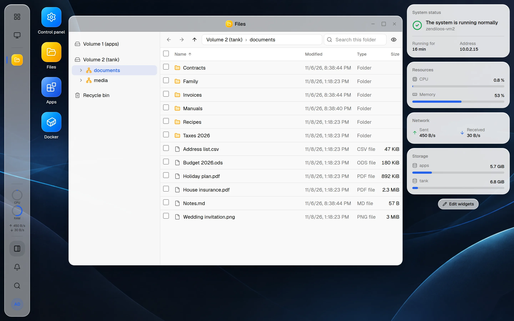

Storage on ZFS
Pools from a single disk up to RAIDZ3, with guard rails that explain what each layout survives.
zendiloOS turns a plain Debian 13 into a NAS you run from the browser: ZFS for your data, shared folders for every device in the house, apps as Docker projects of your own and updates with a click.

Built on open source you already trust
Features
Storage, shared folders, apps and the system around them, with windows, a dock and widgets you already know how to use.
Pools from a single disk up to RAIDZ3, with guard rails that explain what each layout survives.
Folders on a volume, shared over SMB for Windows and macOS and NFS for Linux, with permissions for each person and group.
Snapshots that Windows shows as previous versions, and one recycle bin for all folders.
A tree of your folders, drag and drop, a search through every subfolder, and USB drives to copy from and to.
Apps from a community catalog, installed as Docker projects of your own that you can change.
Containers, images, networks and Compose projects, with live logs, a terminal and image updates.
Debian and zendiloOS in one place, from the channel you choose, every release signed.
Two-factor sign-in, a firewall, certificates from Let’s Encrypt, limits on failed sign-ins and SSH that switches itself off.
Processor, memory, network and disks over time, and notifications by e-mail or webhook before trouble grows.
Storage
Build pools from mirrors up to RAIDZ3 in a few clicks. zendiloOS tells you what each layout survives, warns when a pool has no redundancy left and keeps an eye on every disk.

Files and folders
Every folder on a volume can be shared, and you decide who may read or write. Windows and macOS find it over SMB, Linux mounts it over NFS, and everyone gets to their files in the browser too, in one explorer.


App Center
Pick an app from the community catalog or add a catalog of your own. You choose its folder, ports and settings and see the finished compose.yaml before it starts; from then on it is an ordinary Docker project of yours. Whatever reaches beyond its container, such as a device or the Docker socket, needs your consent.

Docker
Docker is a plugin of the App Center: install it with a click when you need it, then follow your containers, images, networks and logs, or run Compose projects of your own.

Updates
Once a day zendiloOS looks for updates: Debian’s packages and new releases of zendiloOS itself. You decide when to install them, and the NAS only restarts when you say so.

Security
The web interface runs without privileges. Everything that changes the system goes through one small, sandboxed agent, which checks each request against strict rules before anything happens.
Too many failed attempts block the address for a while.
A code from an authenticator app, and recovery codes for a lost phone.
See where you are signed in and end any session.
Decide who reaches which service, Docker’s published ports included.
Turn SSH on for a quick job; it switches itself off again.
An update is only installed with a valid signature.
Apps
Media servers, photo libraries, home automation, ad blockers and more come from the community catalog. Add a catalog of your own and its apps sit right beside them.
Install
The installer is Debian’s own, with the answers filled in. It asks six questions and sets up the rest.
Get the installation ISO of the newest stable release.
Put it on a USB stick with a tool such as balenaEtcher, Rufus or dd.
Start the computer from the stick and choose Install zendiloOS. Answer language, location, keyboard, name, root’s password and the disk for the system.
After the restart the screen shows the address. Open it in a browser on your network and create the first administrator right away: whoever comes first sets the NAS up.
zendiloOS is young. Try it on hardware whose disks hold nothing you would miss.
Install the package from the newest release. ZFS comes from Debian’s contrib and is built for your kernel.
sudo sed -i 's/^Components: main$/Components: main contrib/' \
/etc/apt/sources.list.d/debian.sources
sudo apt update && sudo apt install linux-headers-$(uname -r)
sudo apt install ./zendiloos_<version>_amd64.debOpen source
zendiloOS needs no account and collects no telemetry. It talks to Debian’s mirror, to GitHub for its releases, and to the catalogs and registries your apps come from.
zendiloOS is a package on an ordinary Debian 13. Remove it, and your pools, shares and data stay where they are.
Licensed under Apache-2.0 and developed in the open. Read the code, report a problem, send a pull request.
FAQ
Something missing? Ask on GitHub.
Nothing. zendiloOS is free and open source under the Apache-2.0 license.
Any x86-64 computer with a disk for the system, one or more disks for data and a network connection. Support for arm64 is planned.
Yes, on Debian 13: enable Debian’s contrib component, install the kernel headers and then the zendiloOS package from a release. The commands are in the install section above and in the README.
Pools, shared folders and their data stay where they are, and so do Docker and its apps. zendiloOS keeps its own settings in /var/lib/zendiloos until you remove that too.
Once a day zendiloOS looks for Debian’s package updates and for new releases of zendiloOS on your channel: stable, test or development. Installing is a click, and a release is only installed after its signature and checksum have been verified.
No. There is no account and no telemetry. The NAS only goes online for packages, releases and the app catalogs and images you use.
zendiloOS is young. ZFS protects your data from a failing disk, but no NAS replaces a backup: keep a copy of what you cannot lose somewhere else.

Download the ISO, install it on a spare computer and have your own NAS running this afternoon.